Практичний досвід · журнал «ДентАрт» 2020 №3
Пряма реставрація в реконструкції усмішки: поєднання нових технологій і майстерності
Direct Bonding in the Smile Frame: Merging New Technologies and Touch for the Best
Метод прямої реставрації в техніці «free-hand» ще довго існуватиме й розвиватиметься, бо поки немає інноваційного методу, який зміг би замінити пряму композитну реставрацію. Передбачуваність лікування досягається завдяки високоефективному й простому підходу до пошарового внесення композиту — концепції натуральних шарів. Стаття демонструє показання до прямої реставрації, знайомить із протоколами й визначає перспективи техніки, що поєднує класичну й сучасну стоматологію.
Загальні положення та показання
Реставраційна стоматологія поділилася на два табори — традиційний (усі етапи виконує людина) і сучасний (нові технології на всіх етапах). Проте навіть найпрогресивніші стоматологи визнають, що жодна технологія не може конкурувати з мануальною майстерністю та інтелектом людини, а найконсервативніші — що цифрова стоматологія в майбутньому може підняти рівень масової стоматології. Можливо, істина посередині. Жоден 3D-друк найближчим часом не дозволить робити інтраоральне виготовлення високоестетичних міцних реставрацій простим, ефективним і економічним способом.
Пряма реставрація має унікальні показання: реставрації класів III–V; обмежена або помірна корекція форми (особливо в постортодонтичних випадках); естетичне поліпшення у молодих пацієнтів; закриття діастеми й чорних трикутників; вініри на передні й бічні зуби (за незначного дисколориту); запобігання стиранню зубів. Переваги — збереження тканин, оборотність лікування, тривалість роботи й нижча вартість за задовільної довговічності. Обмеження пов'язані з девітальними зубами чи дуже об'ємними порожнинами, для яких кращі коронки або адгезивні керамічні реставрації.
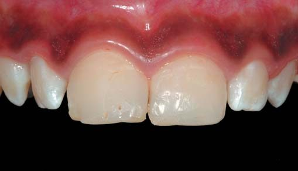
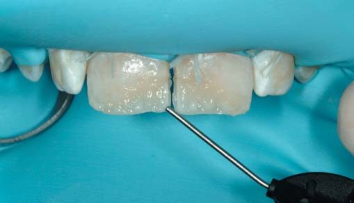
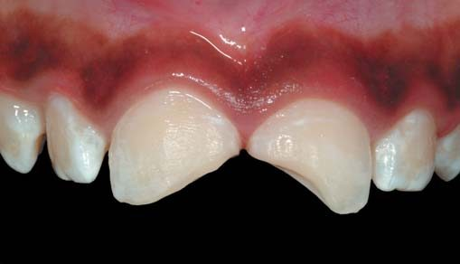
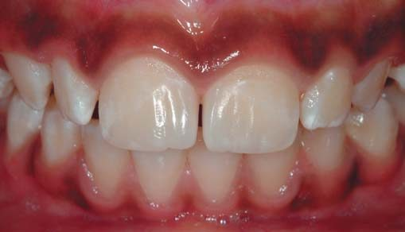
Концепція відтінків і шарів
Пошарова концепція еволюціонувала від примітивної імітації анатомії до надійних протоколів відповідності кольору за багатьма вимірами (відтінок, опаковість, опалесценція, флуоресценція, блиск і мікротекстура). Використання натурального зуба як моделі вдосконалило концепцію натуральних шарів (КНШ), засновану на імітації природних структур. Спектрофотометричні вимірювання привели до висновку, що дентин доцільно представляти одним тоном, однією опаковістю й розширеним колірним діапазоном, а для емалі потрібні три типи (молода — білий відтінок і низька прозорість; зріла — нейтральний і середня; у значному віці — жовтий і вища), доповнені барвниками для багатоколірної/мультипрозорої системи. Для багатших композицій доступні спеціальні ефект-відтінки текучої консистенції (Inspiro, Edelweiss DR).
Клінічний випадок
Пацієнтка 16 років звернулася зі скаргами на естетичну проблему після ортодонтичного лікування із закриттям проміжків через відсутність латеральних різців. Функціонально-естетичний аналіз виявив нерівномірний розподіл зубів і надлишковий вільний простір із діастемою. Моделювання підтвердило потребу додаткової ортодонтичної корекції, тож застосували систему Invisalign; після кращого розподілу простору проведено новий аналіз для прямої реставрації в безпрепарувальній техніці.
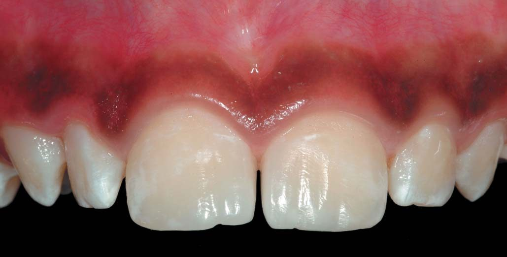
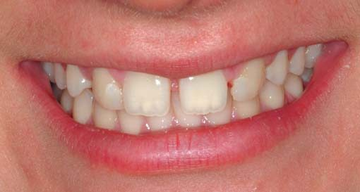
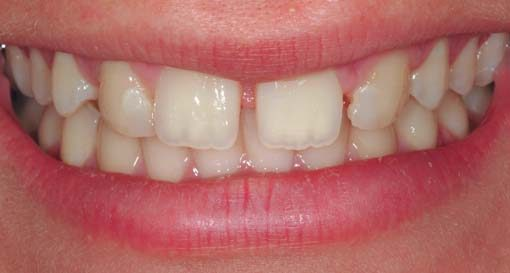
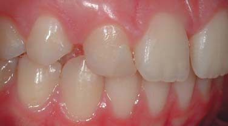
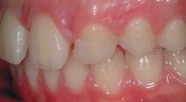
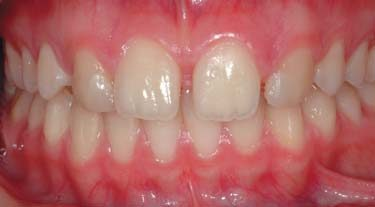
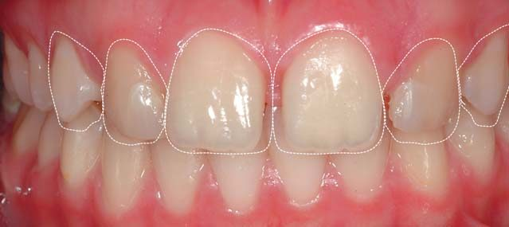
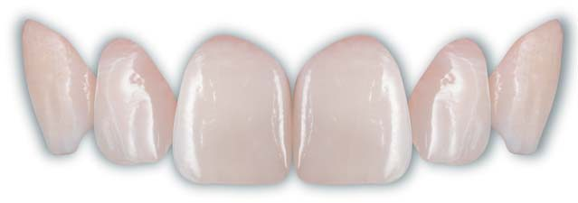
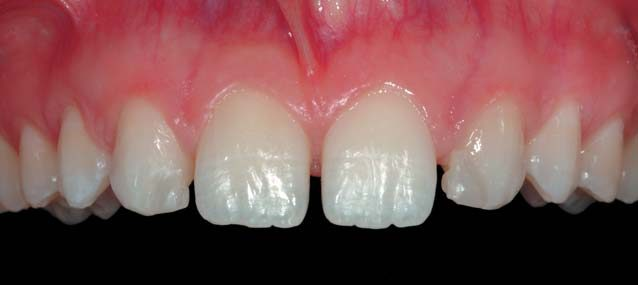
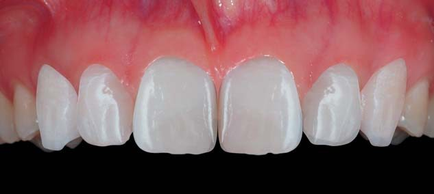
Препарування обмежили лише піскоструминною обробкою після встановлення рабердаму. Для закриття діастеми використали секційні матриці (система Adapt, KerrHawe), форма яких допомагає відтворити природну опуклість проксимальних поверхонь. Застосовано двошарову техніку в концепції натуральних шарів з відтінком дентину (Body i2, Inspiro) та одним відтінком емалі (Skin White, Inspiro); додано невеликі порції ефект-відтінків (Azur та Ice, Inspiro) для імітації хроматичних деталей і посилення ореолу опалесценції. Фінішну обробку й полірування виконано традиційними дисками, алмазними борами (40 мкм) і силіконовими головками (Identoflex, Hi-Luster, KerrHawe).
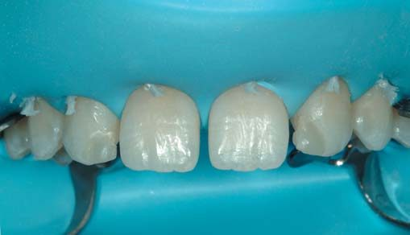
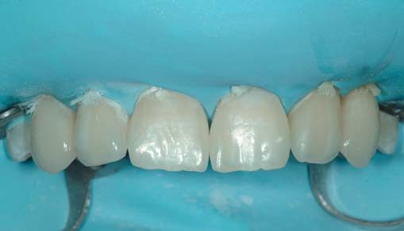
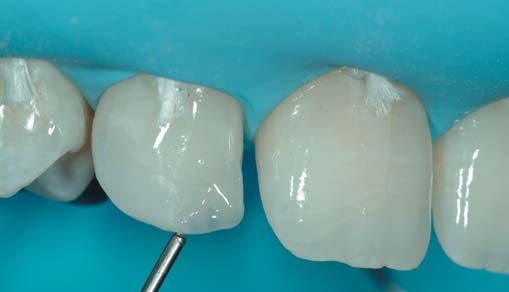
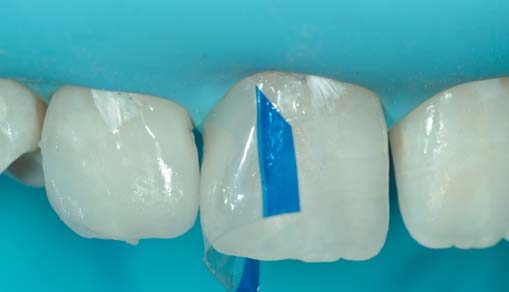
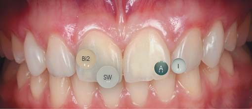
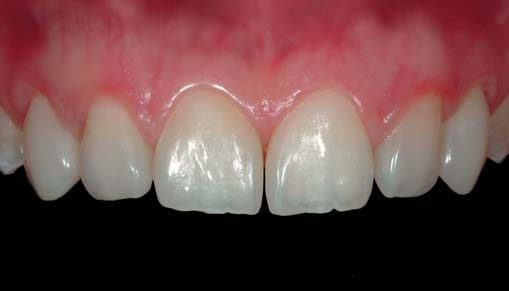
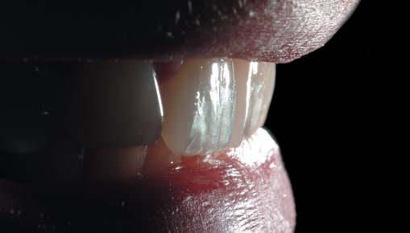
При динамічному спостереженні через 1,5 року виявлено задовільний стан реставрацій без змін форми чи поверхні, здорові м'які тканини й відсутність крайового забарвлювання, що підтверджує правильність обраного варіанту лікування.
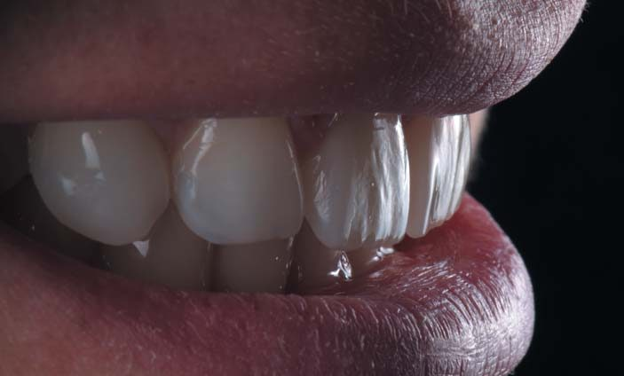
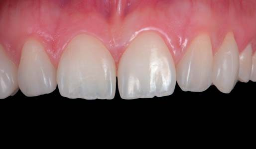
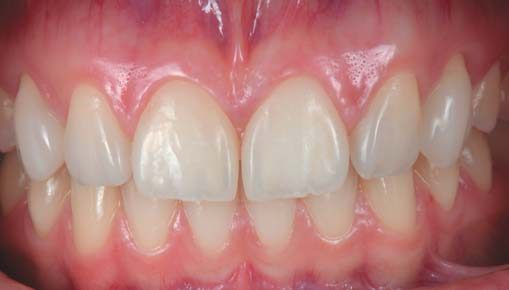
Висновки
Застосування композиту у вільній техніці ще довго існуватиме й розвиватиметься, бо немає методик, які конкурують з його простотою й ефективністю. Тривимірний внутрішньоротовий друк високонаповнених реставрацій навряд чи буде можливий найближчим часом через в'язкість матеріалу, а позаротове виготовлення потребує конічного неконсервативного дизайну порожнини. Нові цифрові технології корисні для діагностики (Digital Smile Design) і 3D-надрукованого мокапу, що полегшує планування, а використання високоефективного простого підходу до пошарового внесення композиту (концепція натуральних шарів) є ключем до успіху в прямій реставрації для сучасного стоматолога.
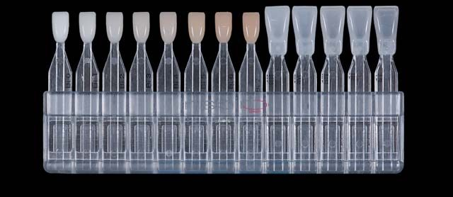
Література
- Coachman C., Paravina R. Digitally Enhanced Esthetic Dentistry. J Esthet Restor Dent. 2016; Suppl 1: S3–4.
- Cook W. D., McAree D. C. Optical properties of esthetic restorative materials and natural dentition. J Biomat Mat Res. 1985; 19: 469–488.
- Demarco F. et al. Anterior composite restorations: a systematic review on long-term survival and reasons for failure. Dental Materials. 2015; 31: 1214–1224.
- Dietschi D. Free-hand composite resin restorations: a key to anterior aesthetics. Pract Periodont Aesthet Dent. 1995; 7: 15–25.
- Dietschi D. Free-hand bonding in esthetic treatment of anterior teeth: creating the illusion. J Esthet Dent. 1997; 9: 156–164.
- Dietschi D., Ardu S., Krejci I. Exploring the layering concepts for anterior teeth. In: Roulet JF, Degrange M (eds.). Adhesion — The Silent Revolution in Dentistry. Quintessence; 2000. p. 235–251.
- Dietschi D. Layering concepts in anterior composite restorations. J Adhesive Dent. 2001; 3: 71–80.
- Dietschi D., Ardu S., Krejci I. A new shading concept based on natural tooth color applied to direct composite restorations. Quintessence Int. 2006; 37: 91–102.
- Heintze S., Valentin R., Hickel R. Clinical effectiveness of direct anterior restorations — a meta-analysis. Dental Materials. 2015; 31: 481–495.
- Hickel R., Manhart J. Longevity of restorations in posterior teeth and reasons for failure. J Adhes Dent. 2001; 3: 45–64.
- Dietschi D., Fahl N. Shading concepts and layering techniques to master direct anterior composite restorations: an update. Br Dent J. 2016; 221: 765–771.